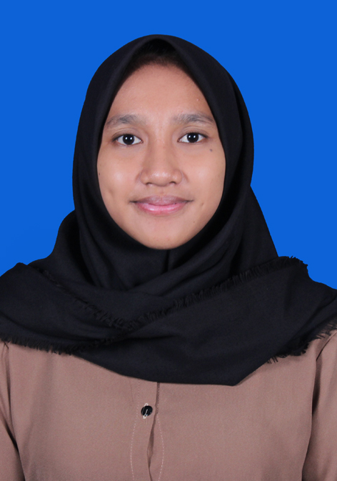

My Curriculun Vitae

A. Tentang Saya
Saya adalah pribadi yang mandiri, pekerja keras dan ulet. Saya menyukai hal-hal yang berbau dengan teknologi. Hobi saya berpetualang atau treveling. Saya memiliki satu saudara kandung dan saya adalah anak ke-2. Saya juga bisa kerjasama secara tim ataupun individu. Motto hidup saya adalah perbanyak pengalaman, karena pengalaman adalah guru terhebat dalam hidup mu.
B. Biodata Pribadi
- Nama : Ita Arianti
- Tempat, tanggal lahir : Jambi, 21 Maret 2002
- Jenis Kelamin : Perempuan
- Agama : Islam
- Kewarganegaraan : Indonesia
- Alamat : Jalan Samiaji dlm III No.999, Kel.Arjuna, Kec.Cicendo, Kota Bandung
- Status : Belum Menikah
C. Riwayat Pendidikan
- TK : TK Pertiwi (2005-2007)
- SD : SDN 187 Bangun Seranten (2007-2013)
- SMP : SMPN 14 Kabupaten Tebo (2013-2017)
- SMA : SMA Pasundan 2 Bandung (2017-2020)
- Perguruan Tinggi : Universitas Pendidikan Indonesia (2020-Now)
D. Kemampuan Bahasa
- Bahasa Indonesia
- Bahasa Sunda
- Bahasa Jawa
- Bahasa Jambi
- Bahasa Inggris
E. Last Project
- 2021. WEBGIS Potensi Wisata Daerah Lembang-Bandung Barat
- 2021. Studi Analisi Perubahan LUasa Vegetasi Mangrove Menggunakan Pengindraan Jauh dan Bisnis Intelijen Serta Faktor Penyebabnya di Kawasan Muara Angke
F. Experience dan riwayat pekerjaan
- Staff pendataan Kelapa Sawit "Perusahaan Dlojor Lautan Sawit" (2020)
- Panitia "MOKAKU-UPI 2021" Universitas Pendidikan Indonesia (2021)
- Panitia "KALIUM"; HIMATASKA event (2021)
- Panitia "Maritim Muda Banten" (2021)
F. Kontak
- Nomor telephone : 082281231324
- Email : itaarianti@upi.edu
- instagram : @itaariantii
Untuk info lebih lanjut, silahkan klik tautan dibawah ini.